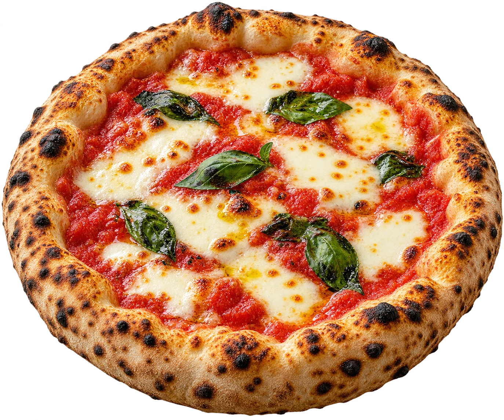

Pizza boa. Companhia melhor.
Todo encontro
pede uma
bella pizza.
Borda dourada, molho de tomate e aquele sabor que faz todo mundo chegar mais perto.
Pizzaria fictícia · Pedidos demonstrativos

Massa, forno e carinho
Sabores para compartilhar
Seu próximo encontro
Da nossa mesa para a sua
A melhor parte
é dividir.
A pizza chega. A conversa continua. Uma proposta de casa que combina receitas italianas e a alegria de sentar à mesa.
Começa na massa
Uma base simples para sabores que combinam.
Passa pelo forno
Borda dourada e o aroma de uma pizza recém-saída.
Termina em encontro
Boa companhia é sempre um ótimo acompanhamento.
Reserve um momento
Junte os amigos.
A mesa é de vocês.
Escolha o dia, o período e a quantidade de pessoas para experimentar a reserva.
Reserva simulada · Nenhum dado enviado
Horários demonstrativos
- Terça a quinta
- 18h às 23h
- Sexta e sábado
- 18h às 00h
- Domingo
- 11h30 às 16h
Localização fictícia
Rua fictícia, nº 00 — Bairro demonstrativo. Localização criada apenas para o modelo.
Informações para você
Antes da
primeira fatia.
Posso fazer um pedido ou uma reserva por aqui?
Nesta apresentação, os botões abrem uma simulação. Nenhum pedido, reserva ou pagamento é enviado a um restaurante.
O cardápio e os preços são reais?
Os pratos, valores e horários são fictícios e servem para apresentar a organização do site.
As imagens são da casa?
As imagens foram geradas por IA para ilustrar esta marca fictícia. No site de um cliente, podemos usar as fotos reais dos pratos e do ambiente.
O site pode receber as informações do meu negócio?
Sim. Cardápio, fotografias, horários, localização e canais de atendimento podem ser personalizados com a TS Digital.
Seu negócio, bem apresentado
O próximo site
pode ser o seu.
Apresente seu cardápio, valorize suas fotos e facilite o contato dos seus clientes com um site da TS Digital.
Solicitar orçamento